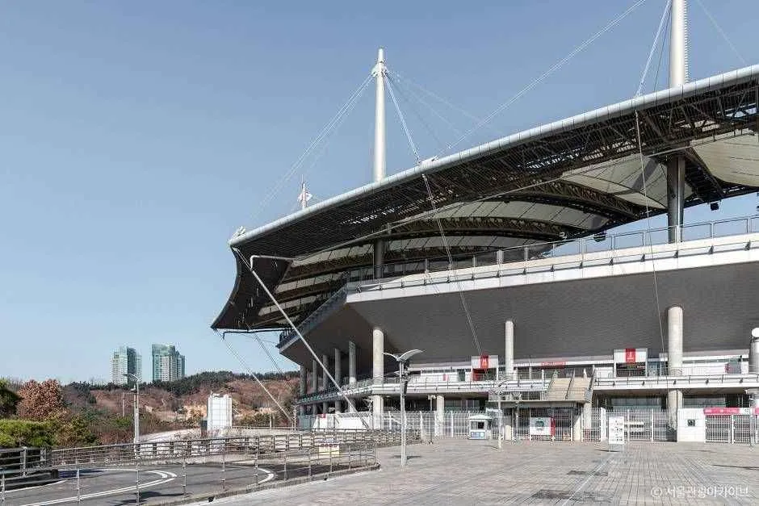
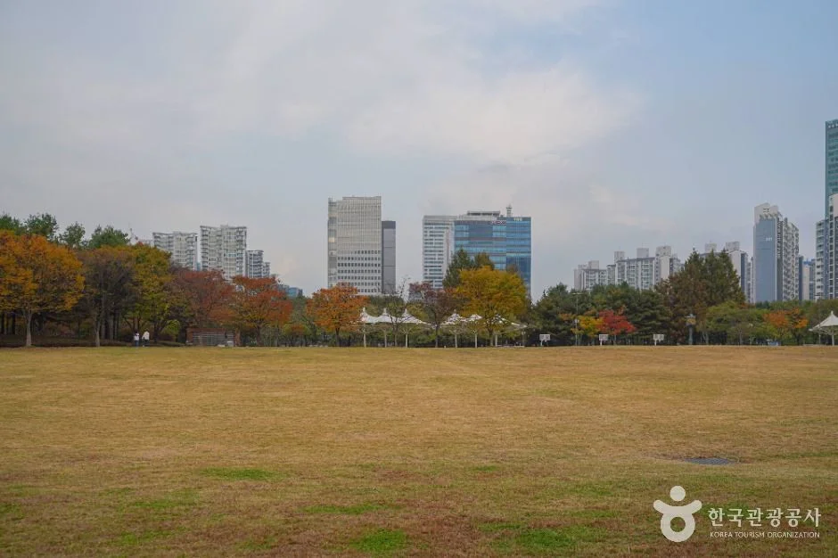
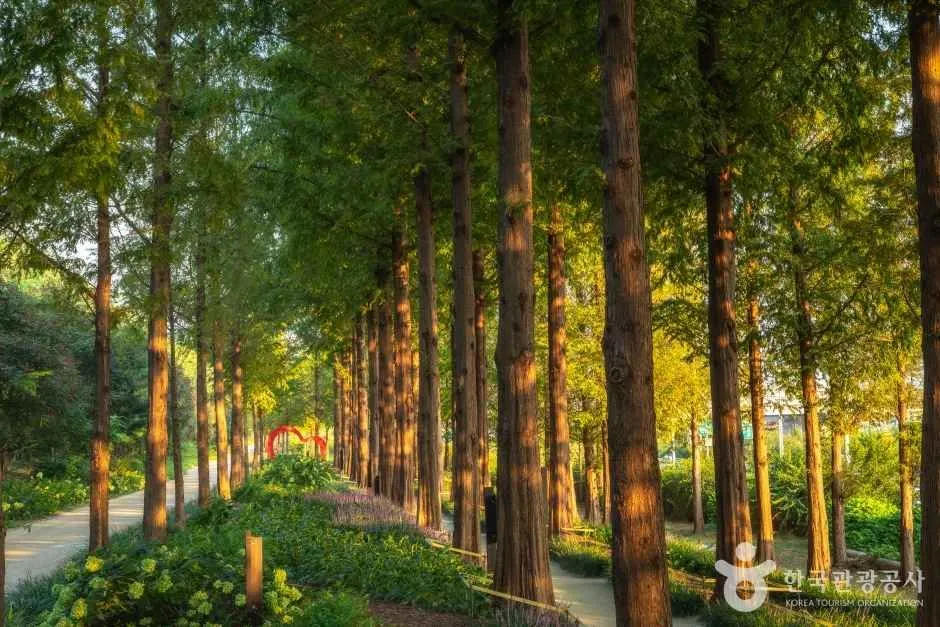
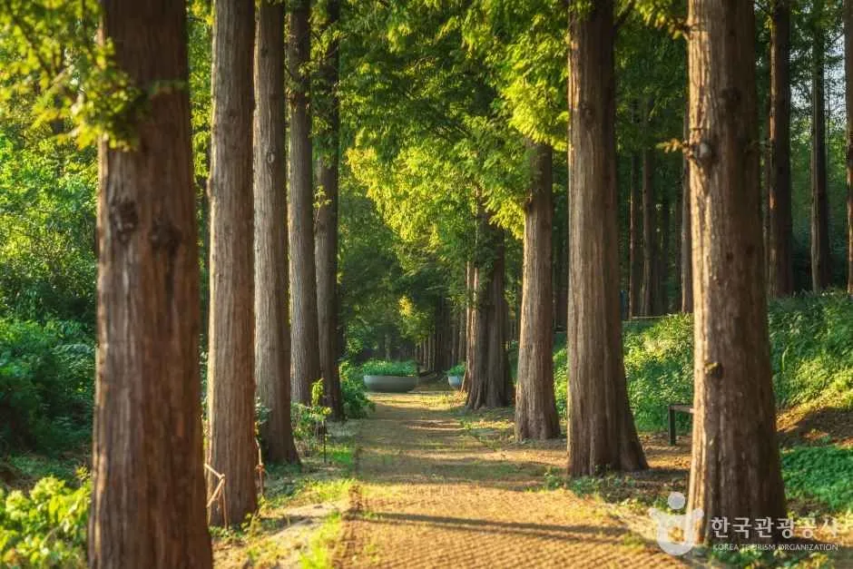
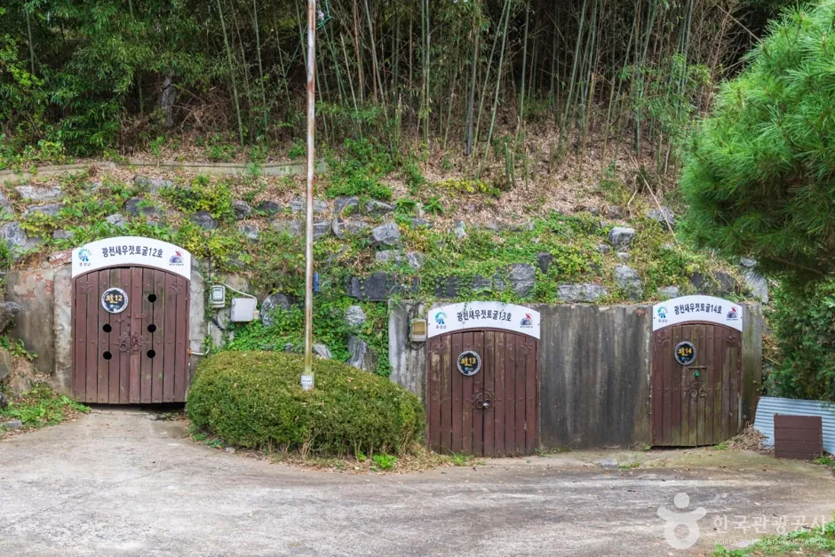
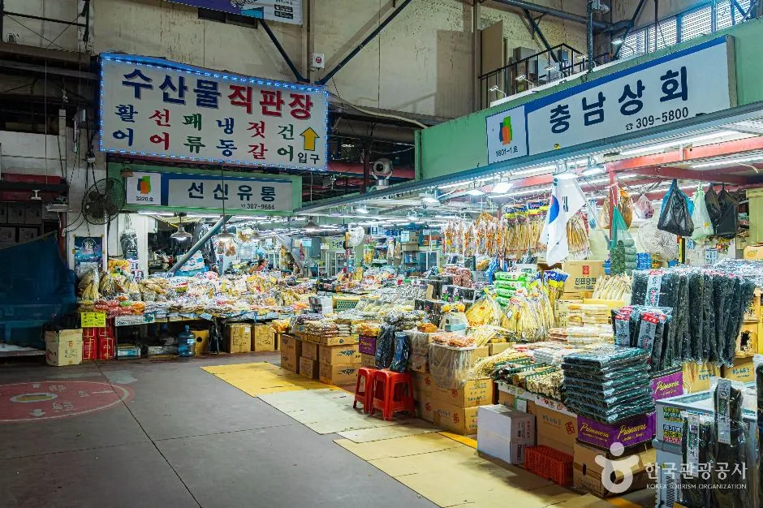
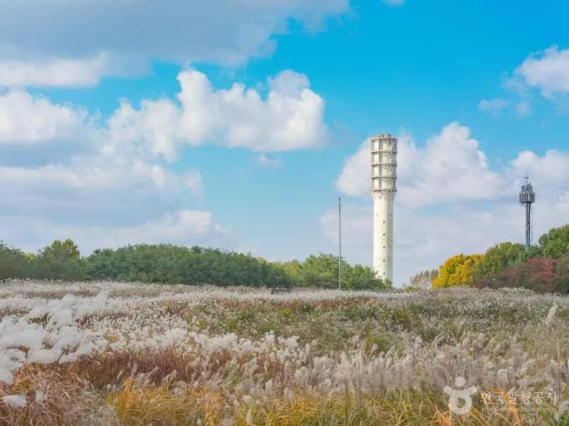
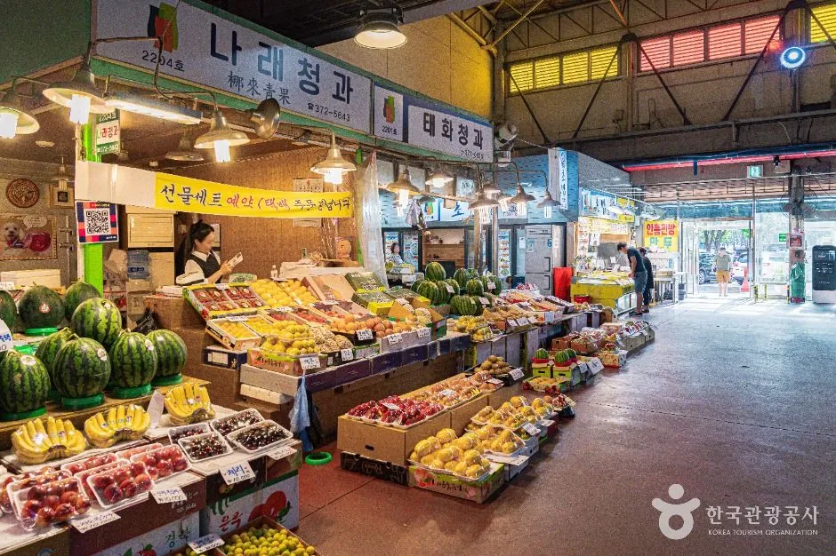

▲ 새우젓 자료 사진(한국관광공사 제공). 이번 축제 현장 사진이 아니다. 사진=한국관광공사
"새우젓 18억어치가 팔렸다던데, 정말 새우젓만 그만큼 팔린 걸까?" 제19회 마포나루 새우젓축제가 10월 16일(금)부터 18일(일)까지 사흘간 월드컵공원 평화광장 일대에서 열린다. 지난해 보도 제목은 "3일간 새우젓 18억 팔려"였지만 본문을 열어 보면 새우젓 장터 매출은 약 7억 원이었고 18억 원에 가까운 17억 9천만 원은 특산물·먹거리 장터까지 합친 총매출이었다. 이 글은 마포구 공식 축제 페이지의 일정·장터 가격표·교통 안내를 직접 확인해 정리했다. 자차로 가려는 사람에게 중요한 축제 전용 주차 정보는 공식 페이지에 없어 확인하지 못했고, 서울시설공단이 공개한 월드컵공원 평화공원 주차장 요금과 지하철·버스 접근을 공식 안내 중심으로 적었다.
1. 한눈에 보기 — 일정·장소·주최
▲ 새우젓 자료 사진(한국관광공사 제공 광천토굴새우젓단지 소개 사진). 이번 축제 현장 사진이 아니다. 사진=한국관광공사
| 항목 | 내용 | 확인 출처 |
|---|---|---|
| 기간 | 2026년 10월 16일(금)~18일(일), 3일간 | 마포구 공식 페이지·언론 일치 |
| 장소 | 월드컵공원 평화광장 일대(서울 마포구 상암동) | 마포구 공식 페이지 |
| 슬로건 | "새우젓좀 맛보구가! 준비했어 마포구가!" | 마포구 공식 페이지 |
| 주최·주관 | 마포구 / 마포문화원 | 마포구 공식 페이지 |
| 주요 내용 | 개막식, 문화공연·전시·체험·판매 등 | 마포구 공식 페이지 |
| 개막 행사 | 16일 10:30 마포구청에서 출발하는 사또행차 퍼레이드와 황포돛배 입항 재현(구민광장~수변무대), 17:00 개막식 | 마포구 공식 일정표·한국금융신문·아시아경제 |
| 판매장터 운영 | 매일 10:00~20:00(새우젓·특산물·먹거리), 문화누리카드 사용 가능 장터 있음 | 마포구 공식 페이지 |
| 놀이마당 운영 | 10:00~18:00(전통놀이 마당존·문화나루터마당·에어바운스, 물빛 그늘쉼터·포토존). 구청 및 유관기관 홍보부스(홍보존) 별도 운영 | 마포구 공식 페이지 |
| 입장료 | 공식 페이지에 입장료 문구가 없어 확인하지 못함(무료 여부 미확인) | — |
| 문의 전화 | 공식 축제 페이지에서 확인하지 못함 | — |
ℹ️ 최종 안내는 마포구 공식 축제 페이지에서
일정과 교통 안내는 마포구 공식 마포나루 새우젓축제 페이지에서 확인할 수 있다. 마포구 축제 일정 바로가기
입장료는 공식 페이지에도, 확인한 보도에도 따로 적혀 있지 않았다. 지난해까지 입장권을 팔았다는 근거도 찾지 못했지만 "무료"라고 단정할 공식 문구는 없으므로 미확인으로 남겼다. 올해 9월 사전 점검 회의는 유동균 구청장이 주재한 것으로 보도됐고(데일리환경, 지난해 결과 보도에는 박강수 구청장으로 나온다), "판매 품질부터 프로그램 운영까지 빈틈없이" 준비하라고 주문했다고 전해진다.
2. 지하철·버스 — 공식 교통안내는 대중교통만 안내한다

▲ 서울월드컵경기장 외관. 행사장 인근 버스 정류장 이름에 이 경기장 남측이 들어간다(상시 풍경). 사진=한국관광공사
마포구 공식 "행사장 오시는 길" 페이지는 평화의공원 평화광장 일원 지도와 함께 버스 정류장 2곳과 지하철역 2곳만 안내한다. 승용차·주차·셔틀 정보는 이 페이지에 없다. 아래는 공식 안내를 그대로 옮긴 것이다.
| 수단 | 정류장·역 | 노선·이용 방법 |
|---|---|---|
| 버스 | 정류장 14-104(월드컵경기장 남측) | 간선 710·271·571 / 지선 7011·7715·733 / 광역 9711 |
| 버스 | 정류장 14-103(마포농수산물 시장) | 간선 710·271·571 / 지선 7011·7715·733 / 광역 9711 |
| 지하철 | 6호선 월드컵경기장역 | 1번 출구로 나와 200m 직진, 횡단보도 건너편 |
| 지하철 | 6호선 마포구청역 | 8번 출구로 나와 300m 직진, 다리 건너편 |
구청 광장에서 평화광장까지 사또행차 행렬이 이동하는 첫날 오전 일정(10:30 구민광장~수변무대)을 보려면 마포구청역 쪽에서 출발하는 편이 동선상 자연스럽다. 두 역의 소요 시간과 혼잡도는 공식 안내에 없다. 인파 규모는 후술하는 지난해 방문객 82만 명(마포구 집계, 헤럴드경제 보도)이 참고치다. 이 정도 인원이 사흘에 몰렸다면 지하철 6호선 월드컵경기장역과 광장 사이 횡단보도 구간이 병목이 될 수 있으나, 이는 추정이다.
3. 자차·주차 — 축제 전용 안내는 없고 공영주차장 요금만 확인

▲ 난지천공원 잔디밭. 난지천공원에도 서울시설공단 주차장(686대)이 있다(가을 상시 풍경, 이번 축제 현장이 아니다). 사진=한국관광공사

▲ 월드컵공원 메타세쿼이아 숲길. 상시 풍경이며 이번 축제 현장이 아니다. 사진=한국관광공사
자차 방문자에게 가장 중요한 축제 전용 정보는 확인되지 않았다. 마포구 공식 페이지(일정·오시는 길·참여자 모집·판매장터)와 주요 보도(아시아경제·한국금융신문·세계일보·뉴스핌·데일리안)에서 임시주차장 위치, 주차 요금, 교통통제 구간, 셔틀버스 운행에 대한 문구를 찾지 못했다. 한국금융신문 본문에는 "주차, 교통통제, 셔틀 정보가 명시되어 있지 않다"는 점이 확인될 뿐이다. 따라서 아래 표는 확인된 것과 확인하지 못한 것을 구분한 것이다.
| 항목 | 확인 결과 | 비고 |
|---|---|---|
| 축제 전용 임시주차장 | 확인하지 못함 | 공식 페이지·보도에 문구 없음 |
| 평화공원 주차장(서울시설공단) | 1,162대, 10분당 300원, 행사시 4시간 5,000원(서울시설공단 서울월드컵경기장 주차 안내) | 축제 기간에 "행사시" 요금이 적용되는지는 확인하지 못함 |
| 난지천공원 주차장(서울시설공단) | 686대, 10분당 300원, 행사시 4시간 5,000원(같은 공단 안내) | 축제 기간 운영·만차 여부는 미확인 |
| 교통통제 구간·시간 | 확인하지 못함 | 도로 통제는 현장 안내(경찰·구청) 확인 필요 |
| 셔틀버스 | 확인하지 못함 | 공식 교통안내에는 정규 버스·지하철만 있음 |
| 공식 권장 수단 | 대중교통 중심 안내만 확인 | 공식 안내가 버스·지하철만 싣고 있음(대중교통 권장 문구 자체는 미확인) |
행사장이 "평화의공원 평화광장 일원"이므로 평화공원 주차장이 가장 가까운 공영주차장으로 보이지만(추정), 축제 안내에는 이 주차장을 쓰라는 문구가 없다. 서울시설공단은 평소 요금을 10분당 300원으로, 행사 때는 4시간 5,000원으로 안내한다. 예컨대 3시간을 머물면 평소 요금 기준으로 5,400원인데, 행사시 요금이 적용되면 5,000원 정액이다(단순 계산). 어느 요금이 적용될지와 만차 시 대안은 확인하지 못했다. 같은 월드컵공원 일대에서 열리는
4. 일자별 프로그램 — 공식 일정표 기준
공식 일정표에 따르면 주요 무대는 특설무대와 수변무대 두 곳이다. 상설 프로그램으로 전통놀이 마당존·문화나루터마당(전통놀이 체험, 주전부리 장터, 에어바운스)이 10:00~18:00, 판매장터(새우젓·특산물·먹거리)가 10:00~20:00 운영된다.
| 날짜 | 시간 | 프로그램 | 장소 |
|---|---|---|---|
| 10/16(금) | 10:30~12:00 | 퍼레이드·입항재현·마당놀이 | 구민광장~수변무대 |
| 10/16(금) | 12:30~13:30 | 마포문화ONE: 하나된 무대 | 특설무대 |
| 10/16(금) | 14:00~15:00 | 외국인과 함께하는 새우젓 김장 담그기 | 특설무대 |
| 10/16(금) | 17:00~19:30 | 개막식 1부(마포나루 문화콘서트), 2부 "다시뛰는 마포, 함께 부르는 노래"(정동하·홍경민·알리·마야) | 특설무대 |
| 10/16(금) | 19:30~21:00 | TBS 특집 공개방송 가을愛 콘서트: 쉼(정수라·현숙 등) | 수변무대 |
| 10/17(토) | 09:00~12:00 | 마포구민 건강걷기대회 | 특설무대 |
| 10/17(토) | 12:00~13:30 | 빅마마와 19m 새우 김밥말기(이혜정) | 특설무대 |
| 10/17(토) | 14:00~15:00 | 줄타기공연 | 특설무대 |
| 10/17(토) | 17:30~20:00 | 전국 엄마아빠 노래자랑(김성환·자두·윤수현) | 특설무대 |
| 10/17(토) | 20:00~21:00 | 달빛아래 클래식&재즈공연 | 수변무대 |
| 10/18(일) | 10:00~11:00 | 마포구민 경연무대 | 특설무대 |
| 10/18(일) | 11:30~13:00 | 홍대 K-인디밴드 릴레이 스테이지 | 특설무대 |
| 10/18(일) | 13:30~14:30 | 돼·새·김 보쌈잔치(돼지고기·새우젓·김치) | 특설무대 |
| 10/18(일) | 17:00~20:30 | 구민의 날 기념식, 폐막공연(불꽃놀이&레이저쇼, 박현빈·홍진영·김용필·전미경·박우철·서가비) | 특설무대 |

▲ 월드컵공원 메타세쿼이아 산책길. 행사 후 걷기 좋은 상시 풍경이다. 사진=한국관광공사
공식 "참여자 모집" 페이지에는 위 일정표에 없는 TV조선 「싱 코리아」 공개 무대(18시 30분, 특설무대, 박서진·남궁진·임찬·최우진·숙행, 사회 조영구)가 "10월 18일(토)"로 적혀 있다. 18일은 일요일이고 같은 시간대에 폐막공연(18:00~20:30)이 잡혀 있어 날짜·시간이 서로 맞지 않으므로 이 글의 일정표에는 넣지 않았고, 실제 편성은 확인하지 못했다. 일정표만 보면 첫날은 낮 10:30 사또행차 퍼레이드와 저녁 개막식 2부가 가장 붐빌 시간대로 보이고(추정), 17일은 오전 걷기대회·낮 새우김밥 말기·저녁 노래자랑이 겹친다. 보도에 따르면 18일 보쌈잔치는 선착순 약 200명이어서 13시 이전 도착이 필요할 수 있다. 보도에 따르면 새우젓 김장 담그기는 외국인 약 70명, 19m 새우김밥 말기는 어린이 38명이 참여하고 노래자랑은 예선을 통과한 21명이 본선에 출연하므로 모두 사전 선발 형식이다(한국금융신문). 일반 관람객이 현장에서 참여할 수 있는지는 확인하지 못했다. 안전 관리에는 안전요원·공무원·자원봉사자 약 600명이 배치된다고 아시아경제가 전했다.
5. 새우젓 장터 — 공식 가격표 11곳과 김장 구매 요령

▲ 충남 홍성 광천의 토굴 새우젓 저장 시설. 축제 참여 산지 중 하나로 소개되는 광천 지역의 상시 풍경이다. 사진=한국관광공사
마포구 공식 "새우젓 판매장터" 페이지는 올해 참여 업체 11곳의 등급별 가격표를 이미지로 공개했다. 장터는 문화누리카드 스티커가 붙은 곳에서 문화누리카드를 쓸 수 있다고 안내한다. 가격표의 단위(kg 또는 다른 용량)는 이미지에 표기돼 있지 않아 단위는 확인하지 못했다. 아래는 표기된 숫자만 옮긴 것이다(특·상·중은 업체 표기 등급).
| 업체 | 육젓 | 오젓 | 추젓 |
|---|---|---|---|
| 강경 광천상회 | 특 80,000 / 상 60,000 / 중 50,000 | 특 50,000 / 상 40,000 / 중 30,000 | 특 25,000 / 상 20,000 / 중 15,000 |
| 강경 장수젓갈 | 특 80,000 / 상 60,000 / 중 50,000 | 특 50,000 / 상 40,000 / 중 30,000 | 특 25,000 / 상 20,000 / 중 15,000 |
| 강경 동서젓갈 | 특 80,000 / 상 60,000 / 중 50,000 | 특 50,000 / 상 40,000 / 중 30,000 | 특 25,000 / 상 20,000 / 중 15,000 |
| 광천 역전토굴새우젓 | 특 100,000 / 상 80,000 / 중 60,000 | 특 50,000 / 상 40,000 / 중 30,000 | 특 30,000 / 상 25,000 / 중 20,000 |
| 광천 갈릴지토굴새우젓 | 특 90,000 / 상 70,000 / 중 60,000 | 특 50,000 / 상 40,000 / 중 30,000 | 특 28,000 |
| 광천 신토불이새우젓 | 특 100,000 / 상 80,000 / 중 60,000 | 특 50,000 / 상 40,000 / 중 30,000 | 특 30,000 / 상 25,000 / 중 20,000 |
| 광천 서해수산식품 | 상 70,000 / 중 60,000 | 상 40,000 / 중 30,000 | 상 25,000 / 중 20,000 |
| 신안 주부식품 | 특 80,000 / 상 70,000 / 중 60,000 | 상 50,000 / 중 45,000 | 상 25,000 / 중 15,000 |
| 부안 곰소육자매젓갈 | 특 60,000 / 상 50,000 | 특 40,000 / 상 30,000 | 특 25,000 |
| 부안 칠산젓갈 | 특 70,000 | 특 40,000 | 특 20,000 |
| 소래 오류동상회 | 특 80,000 | 상 40,000 / 중 20,000 | 특 25,000 |
표를 보면 육젓은 업체와 등급에 따라 50,000원(강경 중 등)에서 100,000원(광천 역전토굴·신토불이 특)까지 두 배 차이가 난다. 오젓은 20,000원(소래 중)~50,000원, 추젓은 15,000원(강경·신안 중 등)~30,000원이다. 업체 11곳은 강경 3곳, 광천 4곳, 신안 1곳, 부안 2곳, 소래 1곳이다. 반면 언론은 새우젓 판매 부스를 "12개"로 보도했으므로 가격표 11곳과 부스 12개의 차이(부스 공동 운영 또는 가격표 미공개 부스)는 확인하지 못했다. 보도들은 "시중가보다 10~15% 저렴하게 책정하고 원산지를 표시한다"고 일관되게 전한다.
| 요령 | 근거 | 비고 |
|---|---|---|
| 원산지 표시 확인 | 마포구가 원산지를 표시한다고 보도됨(복수 매체) | 구매 전 업체 표지판의 산지(강경·광천·신안·부안·소래 등) 확인 |
| 등급과 용도 구분 | 육젓·오젓·추젓 구분 가격표는 공식 확인 | 일반적으로 김장에는 추젓이 쓰이고 육젓은 고급 반찬용으로 알려짐(일반 상식, 이번 공식 안내 문구 아님) |
| 가격 비교 | 같은 등급이라도 업체별 최대 2배 차이(육젓) | 한 곳에서 사기 전 두세 곳 비교 |
| 결제 수단 | 문화누리카드 스티커 부착 장터에서 사용 가능(공식) | 대상자 해당 시 활용 |
| 지난해 가격 참고 | 2025년 육젓 kg당 4만 원부터, 오젓 2만 원부터, 추젓 1만 원부터(헤럴드경제) | 올해 표시 숫자와 단위가 다를 수 있어 직접 비교는 보류 |
6. 지난해 숫자로 보는 규모 — 18억의 정체

▲ 마포농수산물시장 내부. 행사장 인근 정류장 14-103이 이 시장 앞에 있다(상시 풍경). 사진=한국관광공사
지난해(제18회, 2025년 10월 17~19일) 결과를 마포구 발표를 인용한 헤럴드경제 기사로 확인했다. 방문객은 82만 명, 41개 판매 부스의 총매출은 17억 9천만 원(전년보다 2억 원 넘게 증가)이었다. 세부는 새우젓 장터(6개 지역 8개 업체) 약 7억 원, 특산물 장터 약 7억 원, 푸드트럭 포함 먹거리 장터 17개 부스 3억 9천만 원이다. 기사 제목의 "새우젓 18억"은 이 총매출을 가리킨 표현이다. 한편 올해 사전 보도인 아시아경제 기사(2026년 10월 7일)는 "지난해 판매액 약 17억 원"이라고만 적어 헤럴드경제 본문의 구분(새우젓 약 7억, 총매출 17억 9천만 원)과 표현이 다르다. 두 기사 모두 마포구 발표를 인용한 것으로 보이며, 새우젓만의 매출이 17~18억 원이라는 근거는 확인되지 않았다. 마포구 원자료는 확인하지 못했다. 또 올해 보도에는 "매년 50만 명 이상 방문"과 "예상 방문객 50만 명 이상"이 나오지만 지난해 집계는 82만 명이라 두 수치는 기준이 다르다.
| 장터 | 매출 | 비고 |
|---|---|---|
| 새우젓 장터 | 약 7억 원 | 강경·광천·보령·소래·신안·부안 6개 지역 8개 업체 |
| 특산물 장터 | 약 7억 원 | 김치·과일·잡곡·장류·김·건어물 등 |
| 먹거리 장터(푸드트럭 포함) | 3억 9천만 원 | 17개 부스 |
| 합계 | 17억 9천만 원 | 41개 판매 부스, 전년 대비 2억 원 넘게 증가 |
| 방문객 | 82만 명 | 3일간 마포구 집계 |
올해 판매 구성은 보도에 따르면 새우젓 12개 부스(작년 8개에서 확대), 마포구 자매결연 도시(고창·신안·예천·남해·청양·옹진 등)와 지역 농협의 특산물 장터 14개 부스, 새우파스타·새우볶음밥 등 먹거리 12개 부스다. 보도 숫자를 합치면 올해 판매 부스는 12+14+12=38개로, 지난해 41개(새우젓 8+특산물 약 16+먹거리 17, 특산물은 총수에서 뺀 값)보다 3개 적다. 새우젓 부스가 4개 늘어났기 때문에 같은 인파라면 대기 줄이 줄어들 가능성이 있지만 실제 효과는 현장에서 확인해야 한다.
7. 인근 코스 — 하늘공원·마포농수산물시장

▲ 하늘공원 억새밭. 상시 풍경이며 이번 축제 현장이 아니다. 사진=한국관광공사
행사가 끝난 뒤 걷고 싶다면 월드컵공원 안 하늘공원 억새밭이 가깝다. 억새는 10월 중순부터 이삭이 올라오지만 서울억새축제의 2026년 정식 일정은 해당 기사 작성 시점에 확인되지 않았으니 서울억새축제 기사의 오르는 방법(계단·모노레일)을 참고하자. 반대로 새우젓을 산 뒤 다른 김장 재료가 필요하면 마포농수산물시장이 평화광장 인근 정류장(14-103)과 같은 위치에 있다. 김장 재료 직거래 산지를 비교한 절임배추 직거래 기사도 같은 시기 장보기에 도움이 된다.

▲ 하늘공원 억새밭 너머로 보이는 흰색 탑. 가을 시즌 촬영한 상시 풍경으로 이번 축제 현장이 아니다. 사진=한국관광공사

▲ 마포농수산물시장 과일 판매 구역(상시 풍경). 사진=한국관광공사
✅ 출발 전 체크리스트
· 10/16~18, 월드컵공원 평화광장 일대. 개막 퍼포먼스는 16일 10:30 구민광장~수변무대, 개막식은 17:00 특설무대
· 지하철 6호선 월드컵경기장역 1번 출구 200m, 마포구청역 8번 출구 300m
· 버스 정류장 14-104(월드컵경기장 남측)·14-103(마포농수산물 시장): 710·271·571·7011·7715·733·9711
· 판매장터 매일 10:00~20:00, 가격표는 11개 업체(단위 미표기), 문화누리카드 가능 장터 있음
· 평화공원 주차장 1,162대(10분 300원, 행사시 4시간 5,000원, 서울시설공단), 축제 전용 주차·교통통제·셔틀·입장료는 공식 확인 불가, 출발 전 마포구에 재확인
8. 정리
제19회 마포나루 새우젓축제는 10월 16~18일 월드컵공원 평화광장 일대에서 열리며 판매장터는 매일 10시부터 20시까지 운영된다. 마포구 공식 가격표에는 강경·광천·신안·부안·소래 11개 업체의 육젓(50,000~100,000원)·오젓(20,000~50,000원)·추젓(15,000~30,000원) 등급별 가격이 올라 있으나 단위가 표기되지 않았다. 지난해 "새우젓 18억"은 41개 부스 총매출 17억 9천만 원을 가리켰고 새우젓 장터만 보면 약 7억 원이었다.
접근은 6호선 월드컵경기장역(1번 출구 200m)·마포구청역(8번 출구 300m)과 정류장 14-104·14-103 버스가 공식 안내의 전부다. 서울시설공단의 평화공원 주차장(1,162대)은 10분당 300원, 행사시 4시간 5,000원이다. 축제 전용 임시주차장·교통통제·셔틀·입장료 정보는 공식 페이지와 주요 보도에서 확인하지 못했으므로, 자차라면 출발 전에 마포구에 직접 확인하고 가능하면 대중교통을 쓰는 편이 안전하다(추정).